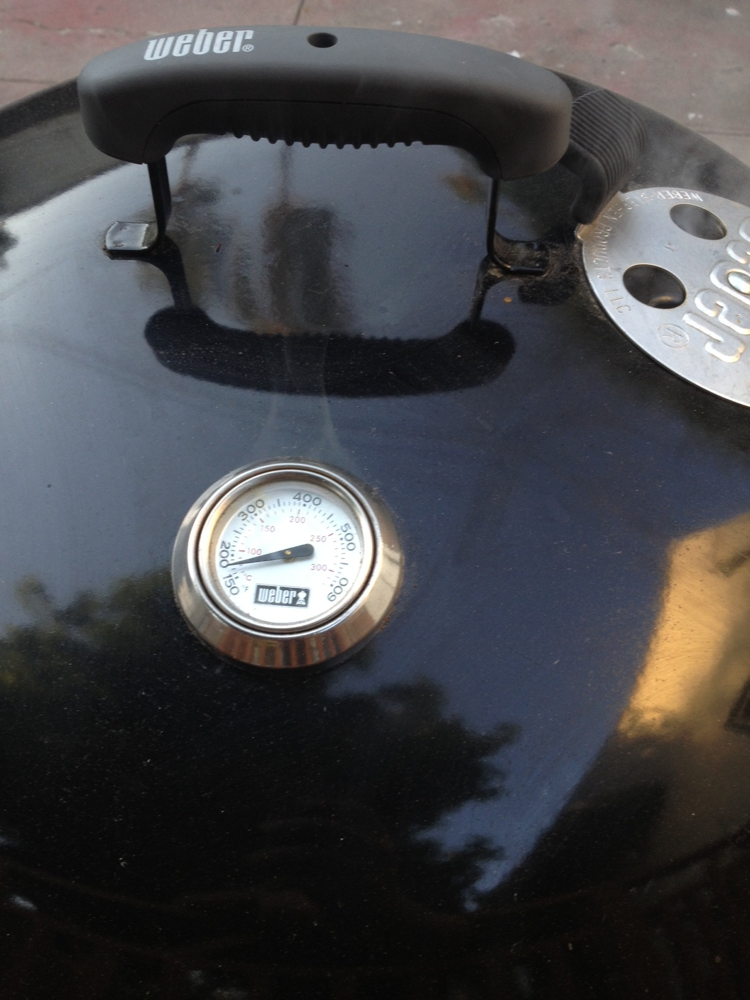

Smoked Salmon Adventure!
The night before I applied a dry cure: a 50/50 mixture of kosher salt and sugar. I packed the salmon in saran wrap and foil.
I also started soaking my wood chips the night before. I used a $300 Le Creuset enameled stock pot for this. Using the best tools available is the mark of a craftsman.
After 20 hours of curing, the salmon left a gross fish solution.
The next step is drying. I left the salmon in the open California air for about five hours to allow a pectin layer to form.
After the salmon was dry, I configured the grill. Salmon on one side, coals on the other, to avoid any chance of cooking the fish with a direct flame. Note that I left the coal side open for easy access.
WARNING! SMOKING SALMON WILL ATTRACT GROSS CATS!

Temperature control was a major concern. Maintaining a constant temperature between 150 and 200 is difficult with charcoal.

This is what the salmon looked like after about four hours in the smoke. BAM!